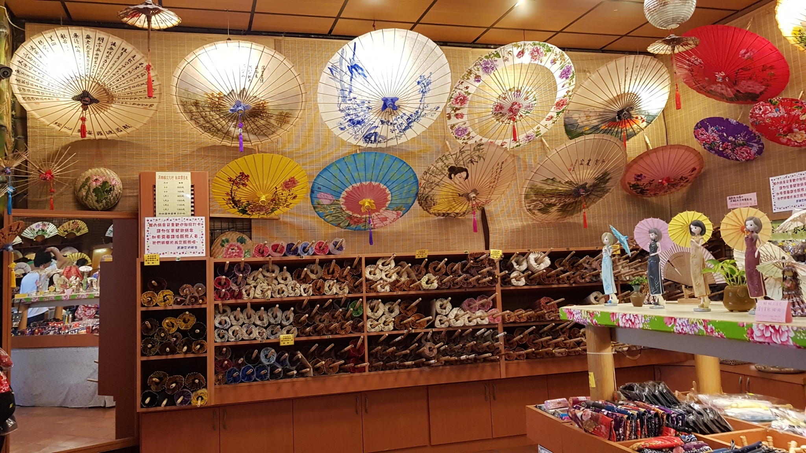

秋冬旅遊補助
9-12月最高省2000
原鄉緣紙傘文化村

※再造紙傘文化生命力
李鴻鈞說：「早期在台灣製作紙傘的工藝除了美濃，還有岡山與屏東一帶，但美濃可說是台灣紙傘文化發展的重鎮。」原本油紙傘的發明，是中國南方先民為了抵擋南方充沛雨水的穿透，塗以桐油防水，以實用性為主，稱作原鄉傳統竹傘（原鄉傘），並沒有彩繪的步驟，後來因西式洋傘的傳入而沒落。 民國70年代，美濃紙傘因電視劇「星星知我心」及雜誌的報導而知名度大開，便改以彩繪紙傘增加其東方文化色彩，具有觀賞及收藏的價值，加上日本對於紙傘有著歷史的情誼，遂大量下訂單，而挽救了當時岌岌可危的紙傘技藝。當時，李鴻鈞已接下紙傘廠的經營，漸漸地把紙傘融入生活與藝術，更將紙傘文化重新孕育。
※融合客家文化五大主軸－紙傘、陶藝、文物、民俗、美食
後來「原鄉緣紙傘廠」傳統工廠的經營模式，已無法應付外來遊客對美濃客家文物的好奇與需求，基於發揚美濃油紙傘傳統工藝的理念，而打造「以傘結緣」的文化村，經過完善的規劃設計，終於在民國83年9月正式開館，成立美濃鎮第一座紙傘文化村。 李鴻鈞經過社區文化的種子培訓，學習如何將當地社區文化與社區居民生活融合在一起，進而達到「社區文化化，文化社區化」。希望能以原鄉緣為圓心，在文化村寬敞的空間與多元化的內涵下，以推廣紙傘文化為根基，融合陶藝、文物、民俗、美食五大主軸，將美濃風情以放射狀的圓無限延伸，這正是「原鄉緣紙傘文化村」logo的精神所在
相關資訊
電話
+07-681-0888
地址
843高雄市美濃區中興路一段147號
開放時間
09:00–17:00
票價資訊
免費